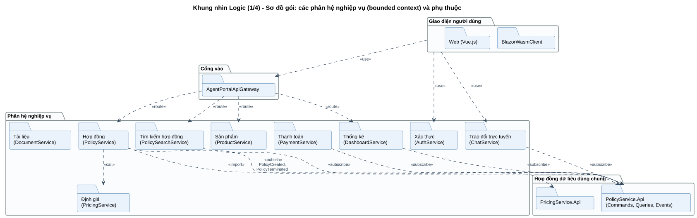
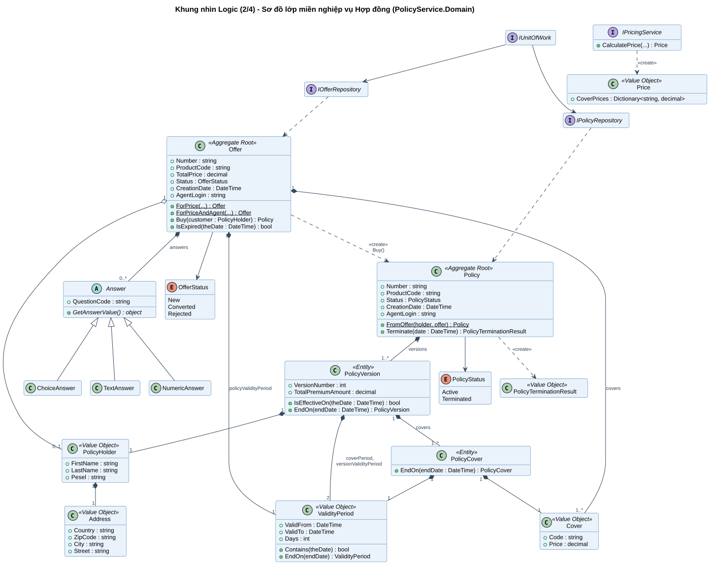
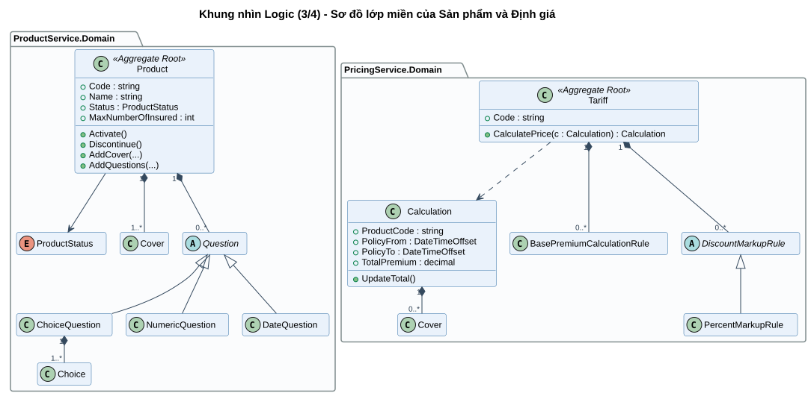
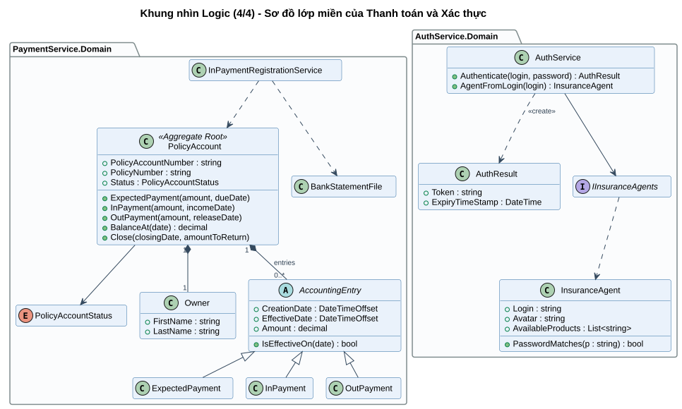
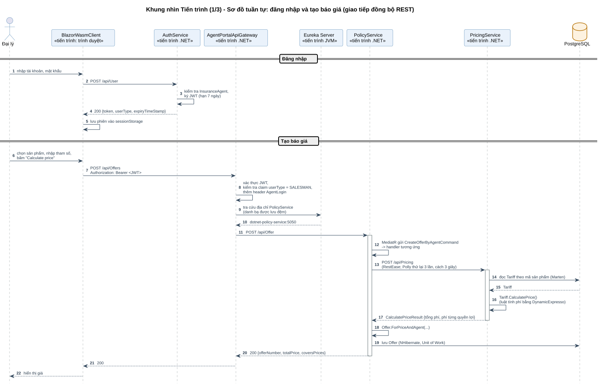
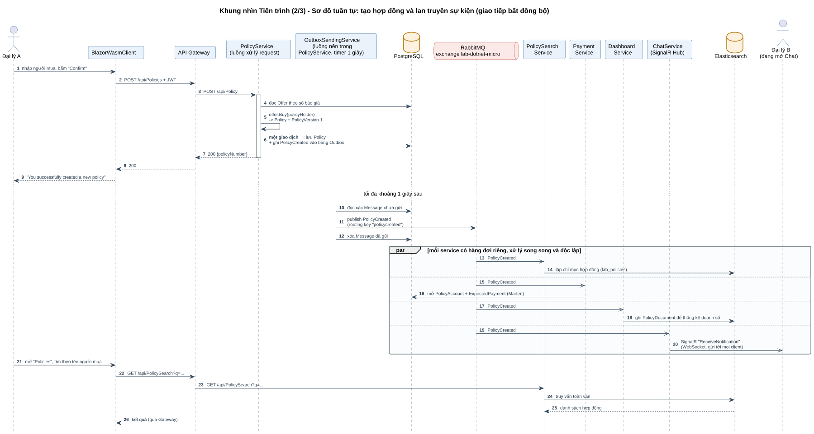
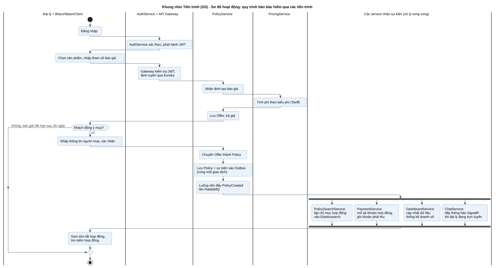
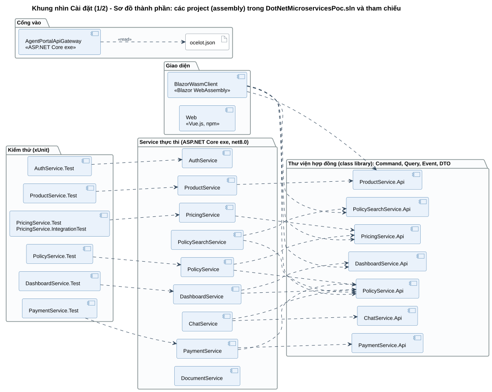
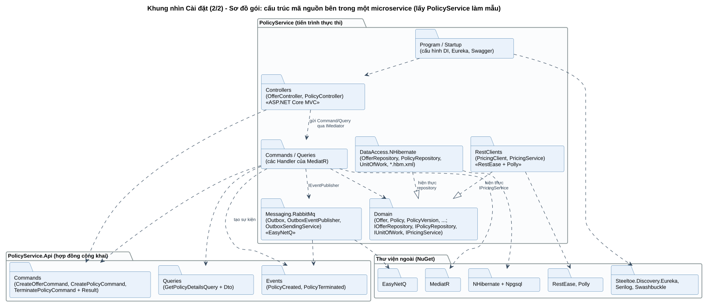
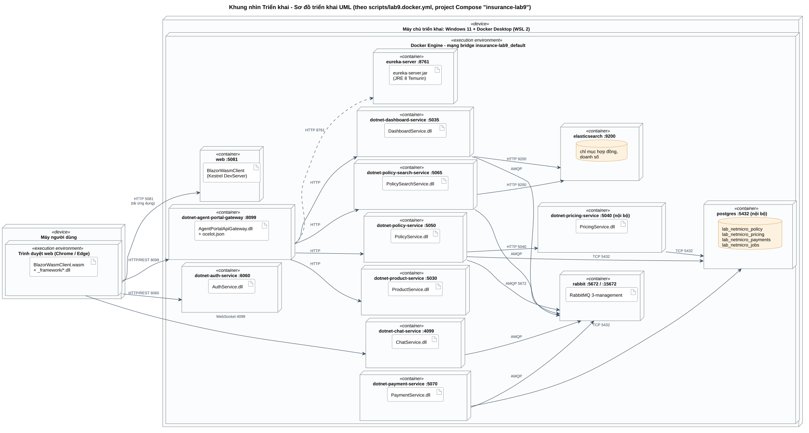

| Sinh viên | Trương Đắc Kiên |
| MSSV | 2424802010029 |
| Lớp | D24CNTT05 |
| Mã nguồn | github.com/KienTD204/Microservices-InsurancePortal-2424802010029 (nhánh student/lab10) |
| Ngày nộp | 15/11/2026 |
Tài liệu mô tả lại kiến trúc của hệ thống cổng bán bảo hiểm (kiến trúc microservices trên .NET 8, đã xây dựng và triển khai ở các bài thực hành 4 đến 9) theo bốn khung nhìn của mô hình "4+1" (Philippe Kruchten). Mỗi khung nhìn trả lời một câu hỏi khác nhau về cùng một hệ thống và phục vụ một nhóm người đọc khác nhau. Tất cả sơ đồ dùng ký pháp UML 2 và được vẽ bằng PlantUML; mã nguồn sơ đồ nằm trong submission/lab10/diagrams.
Các sơ đồ được khái quát từ hệ thống thật: tên lớp, tên project, cổng, hàng đợi và container đều lấy từ mã nguồn và từ bản triển khai Docker Compose của Bài 9, không phải thiết kế giả định.
| Khung nhìn | Câu hỏi được trả lời | Người quan tâm | Sơ đồ UML sử dụng |
|---|---|---|---|
| Logic | Hệ thống cung cấp chức năng gì, gồm những khái niệm nghiệp vụ nào? | Người dùng cuối, người phân tích nghiệp vụ | Sơ đồ gói (Hình 1); sơ đồ lớp (Hình 2, 3, 4) |
| Tiến trình | Lúc chạy, các tiến trình phối hợp, đồng bộ và chạy song song ra sao? | Người tích hợp hệ thống, người lo hiệu năng | Sơ đồ tuần tự (Hình 5, 6); sơ đồ hoạt động (Hình 7) |
| Cài đặt | Mã nguồn được tổ chức thành những project, gói nào và phụ thuộc nhau thế nào? | Lập trình viên, người quản lý cấu hình | Sơ đồ thành phần (Hình 8); sơ đồ gói (Hình 9) |
| Triển khai | Phần mềm được đặt lên những nút nào, nối với nhau bằng giao thức gì? | Kỹ sư hệ thống, người vận hành | Sơ đồ triển khai (Hình 10) |
Khung nhìn Logic mô tả hệ thống ở mức chức năng. Hệ thống được chia thành chín phân hệ nghiệp vụ, mỗi phân hệ là một ngữ cảnh giới hạn (bounded context) và được hiện thực bằng đúng một microservice. Bên trong mỗi phân hệ là mô hình miền gồm các lớp thực thể, đối tượng giá trị và giao diện kho lưu trữ.

Đọc Hình 1. Giao diện phụ thuộc vào Cổng vào để dùng nghiệp vụ, và phụ thuộc trực tiếp vào Xác thực (đăng nhập) và Trao đổi trực tuyến (chat). Cổng vào định tuyến tới bốn phân hệ: Sản phẩm, Hợp đồng, Tìm kiếm hợp đồng và Thống kê. Phân hệ Hợp đồng là trung tâm: nó gọi Định giá để tính phí và công bố hai sự kiện PolicyCreated, PolicyTerminated. Bốn phân hệ Tìm kiếm, Thanh toán, Thống kê và Trao đổi chỉ phụ thuộc vào hợp đồng dữ liệu của sự kiện (gói PolicyService.Api), không phụ thuộc vào phần cài đặt của Hợp đồng; nhờ vậy có thể thêm phân hệ mới mà không sửa phân hệ Hợp đồng.
| Phân hệ | Chức năng cung cấp cho người dùng | Khái niệm miền chính |
|---|---|---|
| Xác thực (AuthService) | Đăng nhập, cấp quyền theo loại người dùng, sản phẩm được phép bán. | InsuranceAgent, AuthResult |
| Sản phẩm (ProductService) | Xem danh mục sản phẩm, quyền lợi và bộ câu hỏi cần trả lời để tính phí. | Product, Cover, Question, Choice |
| Định giá (PricingService) | Tính phí theo sản phẩm, quyền lợi đã chọn và câu trả lời. | Tariff, Calculation, các luật tính phí |
| Hợp đồng (PolicyService) | Lập báo giá, mua (chuyển thành hợp đồng), xem và hủy hợp đồng. | Offer, Policy, PolicyVersion, PolicyHolder |
| Tìm kiếm (PolicySearchService) | Tìm hợp đồng theo số hợp đồng hoặc tên người mua. | Policy (bản đọc) |
| Thanh toán (PaymentService) | Mở tài khoản hợp đồng, ghi khoản phải thu, tiền về, tiền hoàn; xem số dư. | PolicyAccount, AccountingEntry |
| Thống kê (DashboardService) | Doanh số tổng, theo đại lý, theo thời gian. | PolicyDocument, SalesResult |
| Trao đổi (ChatService) | Chat giữa các đại lý, thông báo khi có hợp đồng mới. | AgentChatHub |
| Tài liệu (DocumentService) | Dự kiến sinh chứng chỉ PDF; hiện mới là khung. | - |

PolicyService.Domain).Đọc Hình 2. Có hai gốc tập hợp (aggregate root). Offer (báo giá) chứa các quyền lợi đã định giá (Cover), các câu trả lời (Answer với ba lớp con theo kiểu câu hỏi) và thời hạn bảo hiểm; báo giá hết hạn sau 30 ngày. Thao tác Offer.Buy() tạo ra Policy (hợp đồng) và chuyển trạng thái báo giá sang Converted. Policy được quản lý theo phiên bản: mỗi lần thay đổi (ví dụ hủy) sinh thêm một PolicyVersion có thời gian hiệu lực riêng, nên luôn truy lại được trạng thái hợp đồng tại một ngày bất kỳ. Các giao diện IOfferRepository, IPolicyRepository, IUnitOfWork và IPricingService thuộc tầng miền; phần hiện thực (NHibernate, REST) nằm ở tầng hạ tầng, đúng nguyên tắc đảo ngược phụ thuộc.

Đọc Hình 3. Product là gốc tập hợp của danh mục: mỗi sản phẩm gồm các quyền lợi (Cover, bắt buộc hoặc tùy chọn, có số tiền bảo hiểm) và bộ câu hỏi đa hình (ChoiceQuestion kèm các Choice, NumericQuestion, DateQuestion); sản phẩm đi qua các trạng thái nháp, kích hoạt, ngừng bán. Ở phân hệ Định giá, mỗi sản phẩm có một Tariff giữ danh sách luật tính phí cơ bản (BasePremiumCalculationRule) và luật tăng/giảm (DiscountMarkupRule); Tariff.CalculatePrice() áp các luật lên một Calculation (sản phẩm, thời hạn, quyền lợi, câu trả lời) để ra phí từng quyền lợi và tổng phí. Hai phân hệ chỉ liên hệ với nhau qua mã sản phẩm, không dùng chung lớp.

Đọc Hình 4. PolicyAccount là sổ cái của một hợp đồng, có chủ tài khoản (Owner) và danh sách bút toán; ba loại bút toán ExpectedPayment (phải thu), InPayment (tiền về), OutPayment (tiền hoàn) cùng kế thừa AccountingEntry, và số dư tại một ngày được tính từ các bút toán có hiệu lực đến ngày đó. InPaymentRegistrationService là dịch vụ miền đọc BankStatementFile rồi ghi tiền về vào đúng tài khoản. Ở phân hệ Xác thực, AuthService tra đại lý qua giao diện IInsuranceAgents, so mật khẩu và tạo AuthResult chứa JWT cùng thời điểm hết hạn. Hai phân hệ Tìm kiếm và Thống kê chỉ là mô hình đọc (một lớp tài liệu trong Elasticsearch) nên không vẽ sơ đồ lớp riêng.
Khung nhìn Tiến trình mô tả hệ thống lúc chạy: có những tiến trình và luồng nào, chúng trao đổi đồng bộ hay bất đồng bộ, phần nào chạy song song. Mỗi microservice là một tiến trình hệ điều hành riêng (một container); trong mỗi tiến trình ASP.NET Core, mỗi yêu cầu HTTP được xử lý trên một luồng của thread pool.
| Tiến trình | Luồng / tác vụ chạy bên trong | Cách giao tiếp với tiến trình khác |
|---|---|---|
| Trình duyệt (BlazorWasmClient) | Luồng giao diện WebAssembly; một kết nối SignalR thường trực. | HTTP/REST tới Gateway và AuthService; WebSocket tới ChatService. |
| AgentPortalApiGateway | Luồng xử lý request; tác vụ nền làm mới danh bạ Eureka. | HTTP đồng bộ tới các service; HTTP tới Eureka. |
| PolicyService | Luồng xử lý request; OutboxSendingService (IHostedService, timer 1 giây) đẩy sự kiện. | HTTP đồng bộ tới PricingService (thử lại 3 lần); AMQP publish; TCP tới PostgreSQL. |
| PricingService, ProductService, AuthService | Luồng xử lý request. | Chỉ nhận HTTP đồng bộ. |
| PolicySearchService, DashboardService | Luồng xử lý request; luồng tiêu thụ hàng đợi RabbitMQ. | AMQP subscribe; HTTP tới Elasticsearch. |
| PaymentService | Luồng xử lý request; luồng tiêu thụ hàng đợi; máy chủ Hangfire chạy job đọc tệp sao kê mỗi phút. | AMQP subscribe; TCP tới PostgreSQL. |
| ChatService | Luồng xử lý request; các kết nối SignalR; luồng tiêu thụ hàng đợi. | WebSocket tới trình duyệt; AMQP subscribe. |
| Eureka, RabbitMQ, PostgreSQL, Elasticsearch | Tiến trình hạ tầng độc lập. | Được các service gọi tới. |

Đọc Hình 5. Đây là chuỗi gọi đồng bộ: đại lý phải chờ đến khi có giá. Yêu cầu đi qua bốn tiến trình (trình duyệt, Gateway, PolicyService, PricingService), nên thời gian phản hồi là tổng thời gian của cả chuỗi và lỗi ở PricingService sẽ lan ngược lên. Hệ thống giảm rủi ro này bằng chính sách thử lại của Polly (bước 13) và bằng việc Gateway lưu đệm danh bạ Eureka để không phải hỏi Eureka ở mỗi yêu cầu (bước 9).

Đọc Hình 6. Đại lý nhận kết quả ngay sau bước 9; mọi việc phía sau chạy bất đồng bộ. Ở bước 6, hợp đồng và sự kiện được ghi trong cùng một giao dịch cơ sở dữ liệu (mẫu Transactional Outbox), nên không xảy ra trường hợp lưu hợp đồng mà mất sự kiện. Luồng nền OutboxSendingService đọc bảng Outbox mỗi giây và đẩy lên exchange lab-dotnet-micro. Bốn service nhận có hàng đợi riêng nên xử lý song song và độc lập (khung par): một service lỗi hay chậm không ảnh hưởng ba service còn lại, và thông điệp vẫn nằm trong hàng đợi chờ nó hoạt động lại. Hệ quả là dữ liệu tìm kiếm và thống kê nhất quán sau cùng (trễ khoảng một đến vài giây) chứ không tức thời.

Đọc Hình 7. Sơ đồ gộp hai kịch bản trên thành một quy trình liền mạch và cho thấy điểm rẽ nhánh (khách có mua hay không) cùng điểm phân luồng (fork) nơi bốn service xử lý sự kiện đồng thời.
Khung nhìn Cài đặt (còn gọi là khung nhìn Phát triển) mô tả cách tổ chức mã nguồn. Toàn bộ nằm trong một kho Git và một solution DotNetMicroservicesPoc.sln, nhưng mỗi service là một nhóm project riêng, build ra một tệp thực thi riêng.

ProjectReference).Đọc Hình 8. Mỗi service theo quy tắc ba project: X (tệp thực thi ASP.NET Core), X.Api (thư viện hợp đồng chứa Command, Query, Event, DTO) và X.Test (kiểm thử xUnit). Điểm quan trọng nhất của sơ đồ là không có service thực thi nào tham chiếu service thực thi khác: chúng chỉ tham chiếu các thư viện .Api. Ví dụ PolicyService tham chiếu PricingService.Api để biết cấu trúc lệnh tính phí; bốn service nhận sự kiện và giao diện Blazor tham chiếu PolicyService.Api. Nhờ đó các service chỉ ràng buộc với nhau ở mức hợp đồng dữ liệu và có thể build, kiểm thử, triển khai độc lập. Gateway không tham chiếu project nào; quy tắc định tuyến nằm trong tệp cấu hình ocelot.json.

Đọc Hình 9. Bên trong service, mã nguồn chia theo tầng. Controllers chỉ nhận HTTP rồi gửi Command/Query qua MediatR. Các Handler điều phối nghiệp vụ và chỉ làm việc với tầng Domain. DataAccess, RestClients và Messaging là tầng hạ tầng, hiện thực các giao diện do Domain định nghĩa (mũi tên hiện thực hướng vào Domain), nên tầng miền không phụ thuộc NHibernate, RabbitMQ hay REST. Các service khác theo cùng khuôn mẫu và chỉ thay công nghệ lưu trữ: Marten (Pricing, Payment), EF Core (Product), Elasticsearch (PolicySearch, Dashboard); service nhận sự kiện có thêm gói Listeners và RabbitEventListener.
| Thành phần cài đặt | Sản phẩm sau khi build | Ghi chú |
|---|---|---|
| 9 project service + Gateway | <Tên>.dll (net8.0) + appsettings*.json | Mỗi project có Dockerfile riêng; Bài 9 dùng một image chung scripts/lab9.Dockerfile. |
7 project .Api | Thư viện lớp .dll | Được đóng gói kèm service tham chiếu tới nó. |
| BlazorWasmClient | Gói WebAssembly (_framework, tệp tĩnh) | Chạy trong trình duyệt. |
| Web (Vue) | Thư mục dist (npm build) | Phục vụ bằng Nginx. |
| eureka-server | eureka-server.jar (Gradle) | Viết bằng Java, Spring Boot. |
Các project .Test | Bộ kiểm thử xUnit | Chạy trong GitHub Actions khi đẩy mã. |
scripts/, postgres/ | Tệp Compose, script kiểm tra, SQL khởi tạo | Hạ tầng dưới dạng mã. |
Khung nhìn Triển khai (khung nhìn Vật lý) cho biết phần mềm được đặt lên những nút nào và nối với nhau ra sao. Sơ đồ dưới đây mô tả đúng bản triển khai đã chạy và kiểm chứng ở Bài 9: một máy Windows 11 chạy Docker Desktop, 14 container Linux trên một mạng bridge do Docker Compose tạo.

Đọc Hình 10. Có hai thiết bị: máy người dùng (trình duyệt tải và chạy ứng dụng WebAssembly) và máy chủ triển khai. Trên máy chủ, Docker Engine là môi trường thực thi chứa 14 container; mỗi container là một nút chạy đúng một artifact. Trình duyệt chỉ nối tới bốn container: web (tải ứng dụng), Gateway, AuthService và ChatService. Các đường nối còn lại nằm trong mạng Docker và dùng tên container làm tên máy.
| Container | Image | Cổng công bố | Phụ thuộc khi khởi động |
|---|---|---|---|
| web | insurance-lab9 | 5081 | Gateway, ChatService |
| dotnet-agent-portal-gateway | insurance-lab9 | 8099 | Eureka, Product, Policy, PolicySearch, Payment, Dashboard |
| dotnet-auth-service | insurance-lab9 | 6060 | - |
| dotnet-chat-service | insurance-lab9 | 4099 | Eureka, RabbitMQ |
| dotnet-product-service | insurance-lab9 | 5030 | Eureka |
| dotnet-pricing-service | insurance-lab9 | không (5040 nội bộ) | Eureka, PostgreSQL |
| dotnet-policy-service | insurance-lab9 | 5050 | Eureka, PostgreSQL, RabbitMQ, Pricing |
| dotnet-policy-search-service | insurance-lab9 | 5065 | Eureka, Elasticsearch, RabbitMQ |
| dotnet-payment-service | insurance-lab9 | 5070 | Eureka, PostgreSQL, RabbitMQ |
| dotnet-dashboard-service | insurance-lab9 | 5035 | Eureka, Elasticsearch, RabbitMQ |
| eureka-server | lab-eureka-server (JRE 8) | 8761 | - |
| rabbit | rabbitmq:3-management | 15672 | - |
| postgres | lab-postgres:16 | không (5432 nội bộ) | volume lab9_pgdata |
| elasticsearch | elasticsearch:8.9.2 | 9200 | volume lab9_esdata |
insurance-lab9:latest (dựng từ mcr.microsoft.com/dotnet/sdk:8.0.425, build cả solution ở chế độ Release); mỗi container chạy một lệnh dotnet <Service>.dll với ASPNETCORE_ENVIRONMENT=docker để nạp appsettings.docker.json.127.0.0.1 của máy chủ; PricingService và PostgreSQL không lộ ra ngoài mạng Docker.depends_on kết hợp healthcheck điều khiển; container lỗi được khởi động lại (restart: on-failure).Bốn khung nhìn mô tả cùng một hệ thống nên phải khớp nhau. Bảng dưới lần theo ba phần tử tiêu biểu qua cả bốn khung nhìn.
| Phần tử | Logic | Tiến trình | Cài đặt | Triển khai |
|---|---|---|---|---|
| Hợp đồng | Gói Hợp đồng; lớp Offer, Policy, PolicyVersion | Tiến trình PolicyService + luồng nền Outbox | Project PolicyService, PolicyService.Api, PolicyService.Test | Container dotnet-policy-service :5050, CSDL lab_netmicro_policy |
| Tìm kiếm hợp đồng | Gói Tìm kiếm hợp đồng (mô hình đọc) | Luồng tiêu thụ PolicyCreated, truy vấn Elasticsearch | Project PolicySearchService, PolicySearchService.Api | Container dotnet-policy-search-service :5065, elasticsearch |
| Sự kiện PolicyCreated | Quan hệ «publish» / «subscribe» giữa các gói | Thông điệp bất đồng bộ qua exchange lab-dotnet-micro | Lớp trong PolicyService.Api/Events | Đường truyền AMQP 5672 tới container rabbit |
Web) có trong mã nguồn nhưng không nằm trong bản triển khai Bài 9 nên không có trong sơ đồ triển khai.